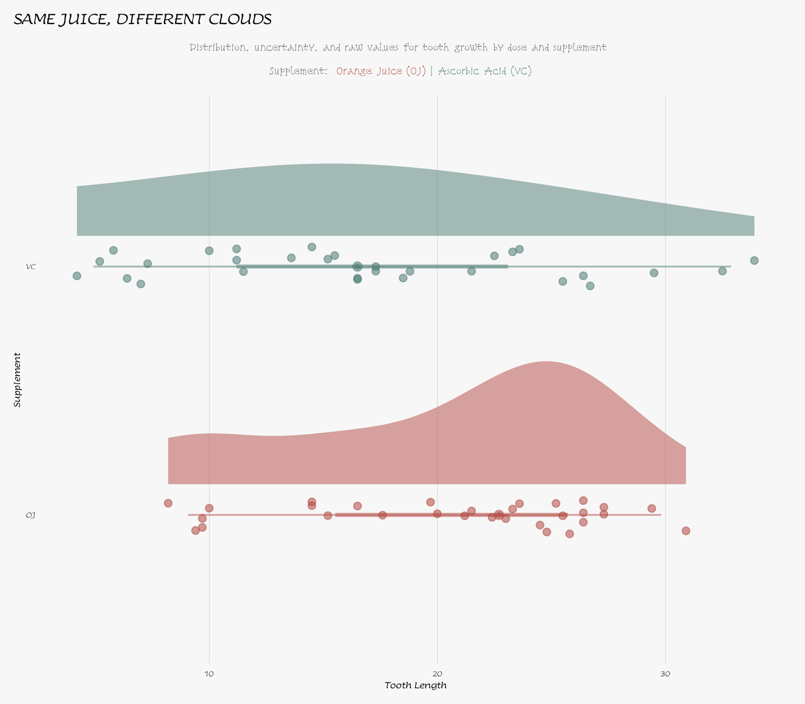
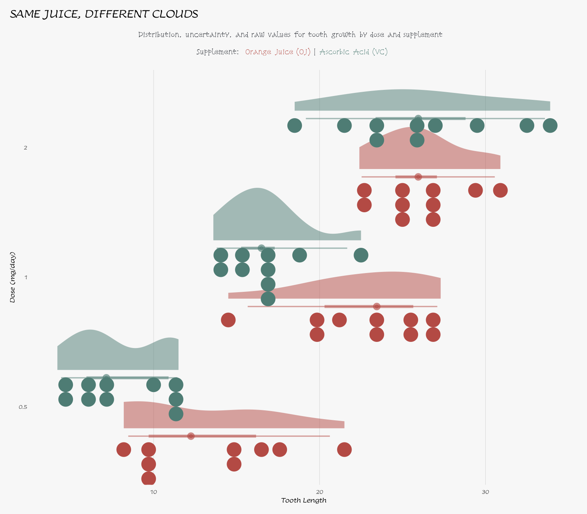

Beyond Equality: Custom Hypotheses with {statim}
Weighted claims, worked through with {statim}
Source:vignettes/usage/beyond-null.Rmd
beyond-null.RmdRationale
vignette("htest", package = "statim") covers the t-test
example but a rudimentary case: is one mean different from a fixed
value, and/or are two means different from each other. Every null
hypothesis in that vignette reduces to MU(a) == MU(b) or
its one-sample cousin MU(a) == mu.
This vignette is about using weighted, non-zero-threshold
claims, not about how state_null() parses them. For the
parsing mechanics, see
vignette("hypothesis-expressions", package = "statim") —
this explains how a coefficient and comparison value are pulled out of
an expression like 2 * MU(x) - MU(y) <= 0, and why group
order in that expression matters.
Kutner, Nachtsheim, Neter, and Li’s Applied Linear Statistical Models poses a different kind of question throughout its inference chapters: not “are these equal,” but “is a specific weighted combination of these parameters above, below, or at some threshold.” Two things can vary in that question, and they don’t cost the same:
-
x_by()’s base two-sample path already reads the comparison value straight out ofstate_null()’s claim.MU(a) - MU(b) <= 3runs on the ordinary two-sample path — no extra steps are needed. -
via(..., "contrast")is the only path inttest-xbyfrom statim that accepts weights other than the implicit+1/-1split, computing the test statistic derived from Welch-Satterthwaite equation rather than a plain mean difference.
Showcase 2 below is the one place in this vignette where the weights
actually depart from \pm 1. That’s the
one place where via("contrast") is required. The rests,
Showcases 1 and 3, stay on the default (base) path.
Disclosure: This vignette isn’t reproducing a specific textbook
problem. The book’s own contrast examples mostly involve three or more
groups (its ANOVA chapters, already covered by
vignette("anova-mod", package = "statim")), while
TTEST’s x_by()’s contrast variant
is built for exactly two. What it does share with the book is the
question type: a weighted, non-zero-threshold null hypothesis
instead of a plain equality. The three showcases below work that
question type through statim, using the same
Welch-Satterthwaite machinery the book’s “contrast tests” are built
on.
Setup
Here are the imports for the actual showcase:
box::use(
statim[
T_TEST, define_model, prepare, via, state_null, conclude, x_by, MU
]
)ToothGrowth ships with R, so no import step is needed
beyond loading it through:
data(ToothGrowth)A look at the data
All three showcases below hinge on the size of the OJ-VC gap, so it’s
worth seeing that gap before testing it. Let’s start by computing the
mean by supplement type (supp):
box::use(
dplyr[mutate, summarise, keep_when = filter, n],
forcats[as_factor],
stats[sd],
)
ToothGrowth |>
mutate(dose = as_factor(dose)) |>
summarise(
n = n(),
mean = mean(len),
sd = sd(len),
.by = supp
) supp n mean sd
1 VC 30 16.96333 8.266029
2 OJ 30 20.66333 6.605561Then the stratified summaries (uncover interactions early):
box::use(
dplyr[mutate, group_by, summarise, keep_when = filter, n],
forcats[as_factor],
stats[sd],
)
ToothGrowth |>
mutate(dose = as_factor(dose)) |>
group_by(supp, dose) |>
summarise(
n = n(),
mean = mean(len),
sd = sd(len),
.groups = "drop"
)# A tibble: 6 × 5
supp dose n mean sd
<fct> <fct> <int> <dbl> <dbl>
1 OJ 0.5 10 13.2 4.46
2 OJ 1 10 22.7 3.91
3 OJ 2 10 26.1 2.66
4 VC 0.5 10 7.98 2.75
5 VC 1 10 16.8 2.52
6 VC 2 10 26.1 4.80
Let us check the distribution:
Click here to open
box::use(
ggplot2[
ggplot, aes, labs, theme_minimal, theme, element_blank,
geom_jitter, position_jitter, element_text, element_line,
element_rect, margin, scale_fill_manual, scale_colour_manual,
coord_flip, scale_y_continuous
],
ggdist[stat_halfeye, stat_dots],
# patchworks[plot_annotation],
sysfonts[add_font = font_add_google],
showtext[showtext_auto],
ggtext[element_markdown],
)
bg_color = "grey97"
supp_colors = c(OJ = "#B34A44", VC = "#4E7C74")
# dodge_width = 0.9
add_font("Lumanosimo", "Lumanosimo")
add_font("Snowburst One", "Snowburst One")
showtext_auto()
subtitle_text = paste0(
"Distribution, uncertainty, and raw values for tooth growth by dose and supplement ",
"<br>",
"**Supplement:** ",
"<span style='color:#B34A44;'>**Orange Juice (OJ)**</span> | ",
"<span style='color:#4E7C74;'>**Ascorbic Acid (VC)**</span>"
)
theme_growth = function(subtitle_colour = "grey40") {
theme_minimal(base_size = 12, base_family = "Lumanosimo") +
theme(
legend.position = "none",
plot.background = element_rect(colour = NA, fill = bg_color),
plot.title.position = "plot",
plot.title = element_text(face = "bold", size = 20),
plot.subtitle = element_markdown(
colour = subtitle_colour, size = 13, hjust = 0.5,
family = "Snowburst One",
lineheight = 1.3,
margin = margin(t = 6, b = 14)
),
panel.grid = element_blank(),
panel.grid.major.x = element_line(linewidth = 0.15, colour = "grey80"),
axis.text.y = element_text(face = "bold"),
plot.margin = margin(10, 12, 10, 10)
)
}Plots
ggplot(ToothGrowth, aes(x = supp, y = len, fill = supp, colour = supp)) +
stat_halfeye(
alpha = 0.5,
.width = c(0.5, 0.95),
point_interval = "median_qi",
justification = -0.25,
width = 0.55
) +
geom_jitter(
position = position_jitter(width = 0.08, height = 0, seed = 1),
size = 2.2,
alpha = 0.55,
show.legend = FALSE
) +
scale_fill_manual(values = supp_colors, guide = "none") +
scale_colour_manual(values = supp_colors, guide = "none") +
scale_y_continuous(breaks = seq(0, 35, 10)) +
coord_flip() +
labs(
title = toupper("Same juice, different clouds"),
subtitle = subtitle_text,
x = "Supplement",
y = "Tooth Length"
) +
theme_growth()
ggplot(ToothGrowth, aes(x = factor(dose), y = len, fill = supp, colour = supp)) +
stat_halfeye(
aes(fill = supp),
alpha = 0.5,
position = "dodge",
.width = c(0.5, 0.95),
point_interval = "median_qi",
justification = -0.15,
width = 0.9
) +
stat_dots(
aes(fill = supp),
side = "bottom",
justification = 1.05,
binwidth = NA,
dotsize = 0.8,
position = "dodge"
# verbose = TRUE
) +
scale_fill_manual(values = supp_colors, guide = "none") +
scale_colour_manual(values = supp_colors, guide = "none") +
scale_y_continuous(breaks = seq(0, 35, 10)) +
coord_flip() +
labs(
title = toupper("Same juice, different clouds"),
subtitle = subtitle_text,
x = "Dose (mg/day)",
y = "Tooth Length"
) +
theme_growth(subtitle_colour = "#1D2128")
Conditioning on dose
The stratified summary and the plot above agree on something the
marginal number hides: the OJ-VC gap is not constant across
dose. It runs about 5.25 units at 0.5 mg/day, close to its
widest at 5.93 units at 1 mg/day, and collapses to -0.08 units
(indistinguishable from zero — at 2 mg/day). Pooling across
dose, as a plain two-sample test does, blends a real effect
at the two lower doses with a null effect at the highest one. That
pooled test puts the marginal gap at 3.70 units and fails to clear a
3-unit bar (p \approx 0.36), a
conclusion that dissolves once dose enters the picture.
The three showcases below work within dose == 1, the
middle level, where the gap is close to its largest and far from the
point where OJ and VC converge. This keeps the worked examples honest
about what the data actually support at a fixed dose, rather than
testing a pooled average that no individual dose exhibits. A full
treatment of the dose effect itself, whether it’s a genuine effect, an
interaction with supp, or well-modelled as a factor — is an
ANOVA question, not a two-sample one; see
vignette("anova-mod", package = "statim").
This isn’t free. Restricting to dose == 1 drops
n from 30 per arm (pooled across all three doses) to 10 per
arm, and the Welch-Satterthwaite df in Showcases 1 and 3
reflects that smaller sample: about 15 rather than the roughly 55 a
pooled test would have. That’s the cost of testing at a dose where the
effect is actually visible, rather than the cost of some cheaper
alternative — the marginal test above shows pooling gets the wrong
answer here, not a merely less precise one. Showcase 3’s non-rejection
later on is partly this reduced power at work, not only a stricter
bar.
Showcase 1: Clinically Meaningful Superiority
Question: At 1 mg/day, does OJ outperform VC by more than 3 units (a practically relevant margin)?
H_0: \mu_{\text{OJ}} - \mu_{\text{VC}} \leq 3 \qquad H_1: \mu_{\text{OJ}} - \mu_{\text{VC}} > 3
A plain two-sample test only asks whether the two means differ at
all. A textbook question is sharper: is OJ’s advantage over VC big
enough to matter, not just big enough to be non-zero. Stating
3 as the comparison value, rather than 0, is
what turns this into a genuine threshold test rather than a relabeled
equality test. The weights are still the default \pm 1 split (already sum-to-zero, so this was
a contrast either way), so this stays on the base two-sample path (this
is valid on stats::t.test(), and needs no
via("contrast"), except you could still use it if you
wanted to, since \pm 1 weights are
valid there too).
ToothGrowth |>
# filter(dose == 1)
keep_when(dose == 1) |>
define_model(x_by(len, supp)) |>
prepare(T_TEST) |>
state_null(
MU(len, supp == "OJ") - MU(len, supp == "VC") <= 3
) |>
conclude()
== Model =======================================================================
Variable Mapper : x_by
Args : len | supp
x_vars : 1
by_vars : 1
== T-Test ======================================================================
-- Summary ---------------------------------------------------------------------
──────────────────────────────────────────
group estimate t_stat df p_val
──────────────────────────────────────────
supp 5.930 1.993 15.360 0.032
──────────────────────────────────────────
-- Confidence Interval ---------------------------------------------------------
─────────────────────────────
group lower_95 upper_95
─────────────────────────────
supp 3.356 Inf
─────────────────────────────
Interpretation:
- At
dose == 1, the estimated OJ-VC gap is 5.93, comfortably above the 3-unit bar.t_stat(1.9926) andp_val(0.0322) test that gap against 3, not against zero. At \alpha = 0.05, that’s enough to reject H_0: within this dose, OJ’s advantage isn’t just present, it exceeds 3 units. The one-sided 95% lower bound of 3.3562 makes the same point. The true gap is unlikely to sit at or below the 3-unit bar. Conditioning on dose recovered an effect the marginal test above couldn’t see.
Showcase 2: Weighted Dominance
Question: At 1 mg/day, does twice the mean under OJ still substantially exceed the VC mean?
H_0: 2\cdot\mu_{\text{OJ}} - \mu_{\text{VC}} \leq 0 \qquad H_1: 2\cdot\mu_{\text{OJ}} - \mu_{\text{VC}} > 0
Unlike Showcase 1, the two sides here carry different weights:
2on one group1on the other
So this isn’t a rescaled version of the same null hypothesis. There’s
no way to hand base R’s t.test() a coefficient per group;
the comparison has to be pre-computed by hand before the call. Here the
coefficients live directly in the null hypothesis, and because they
aren’t \pm 1, this is the one showcase
in this vignette where via("contrast") is required. Drop it
and the base path’s claim parser rejects the claim outright, since it
only accepts a -1/+1 split.
ToothGrowth |>
keep_when(dose == 1) |>
define_model(x_by(len, supp)) |>
prepare(T_TEST) |>
state_null(
# If no coefficient
# it is hidden and
# it contains a coefficient of 1
# weight cannot be 0, after all
2 * MU(len, supp == "OJ") - MU(len, supp == "VC") <= 0
) |>
via("contrast") |>
conclude()
== Model =======================================================================
Variable Mapper : x_by
Args : len | supp
x_vars : 1
by_vars : 1
== T-Test · contrast ===========================================================
-- Summary ---------------------------------------------------------------------
───────────────────────────────────────────
group estimate t_stat df p_val
───────────────────────────────────────────
supp 28.630 11.019 10.840 <0.001
───────────────────────────────────────────
-- Confidence Interval ---------------------------------------------------------
─────────────────────────────
group lower_95 upper_95
─────────────────────────────
supp 23.958 Inf
─────────────────────────────
Interpretation:
-
estimate(28.63) is 2 \cdot \bar{x}_{\text{OJ}} - \bar{x}_{\text{VC}} itself, since.muis 0 here.p_valis below0.001, so H_0 is rejected: twice OJ’s mean does not fall short of VC’s, in fact, it’s well above it. The 95% lower bound of 23.9576 says the same thing, since it sits nowhere near 0.
A caveat worth stating plainly: weights of 2, -1 sum to
1, not 0, so this isn’t a contrast in the
strict ANOVA sense (it isn’t location-invariant). Shift the origin of
the measurement scale and 2 * MU(OJ) - MU(VC) changes value
even though the relationship between OJ and VC hasn’t.
Tooth length has a genuine zero (len = 0 means no
measurable growth), so the weighting isn’t arbitrary here, but the same
expression on a scale without a true zero (Celsius temperature, say)
would give a different answer depending on where you happened to put
0. Reach for via("contrast") when you actually
need weights other than \pm 1; don’t
reach for non-zero-sum weights by default just because the machinery
allows it.
Showcase 3: Dynamic Threshold
Question: At 1 mg/day, is the OJ-VC gap at least 20% of the overall (all-dose) average tooth length?
H_0: \mu_{\text{OJ}} - \mu_{\text{VC}} \leq 0.20 \times \bar{x}_{\text{overall}} \qquad H_1: \mu_{\text{OJ}} - \mu_{\text{VC}} > 0.20 \times \bar{x}_{\text{overall}}
Just like Showcase 1, except the comparison value isn’t a number
chosen in advance — it’s a data-driven threshold computed from the
dataset itself. statim resolves variables from the
environment inside state_null(), so you can build flexible,
context-aware hypotheses without pre-creating columns or hard-coding
numbers. The weights are still \pm 1,
so, as in Showcase 1, this stays on the base path where no
via("contrast") call is needed.
overall_avg below is computed from the full
dataset, all three doses, not the dose == 1 subset under
test. It’s meant as an absolute benchmark on the tooth-length scale, not
a property of this particular dose.
Whether the margin is a fixed number like Showcase 1’s 3 units or a rule like this 20% threshold, it needs to come from domain knowledge and be fixed before the data are in view — not chosen once the estimate is already visible, at which point it stops being a real test.
overall_avg also depends on the dose composition of the
experiment it’s computed from, separately from the
estimation-uncertainty point below: a design that ran more high-dose
animals would pull this benchmark down before any test ever ran, since
the highest dose is where the OJ-VC gap collapses toward zero.
overall_avg = mean(ToothGrowth$len) # 18.8133
ToothGrowth |>
keep_when(dose == 1) |>
define_model(x_by(len, supp)) |>
prepare(T_TEST) |>
state_null(
# An outside variable `overall_avg` is still
# looked up by `state_null()`
MU(len, supp == "OJ") - MU(len, supp == "VC") <= 0.20 * overall_avg
) |>
conclude()
== Model =======================================================================
Variable Mapper : x_by
Args : len | supp
x_vars : 1
by_vars : 1
== T-Test ======================================================================
-- Summary ---------------------------------------------------------------------
──────────────────────────────────────────
group estimate t_stat df p_val
──────────────────────────────────────────
supp 5.930 1.474 15.360 0.080
──────────────────────────────────────────
-- Confidence Interval ---------------------------------------------------------
─────────────────────────────
group lower_95 upper_95
─────────────────────────────
supp 3.356 Inf
─────────────────────────────
Interpretation:
The estimated OJ-VC gap at
dose == 1is 5.93, the same estimate as Showcase 1. Both showcases test the identical subset and the identical difference, just against different bars. The dynamic threshold (20% of the overall average) is about 3.7627, higher than Showcase 1’s fixed 3-unit bar.t_stat(\approx 1.4739) andp_val(\approx 0.0804) test the gap against this stricter value. At \alpha = 0.05, that’s not quite enough to reject H_0.Showcase 1 and Showcase 3 report the same confidence interval, (3.3562, \infty). That’s not a copy-paste error: the interval describes the plausible range for the gap itself, which doesn’t depend on which threshold you’re testing it against. What differs is where each threshold sits relative to that interval. 3 falls below the lower bound (so Showcase 1 rejects), 3.7627 falls above it (so Showcase 3 doesn’t). Same evidence, different bar, different conclusion — which is the entire point of a threshold test.
One footnote:
overall_avgis itself estimated from this sample, then treated as fixed once computed. That’s fine for a worked example, but a fully rigorous treatment would need to account for the extra uncertainty in estimating the threshold before testing against it. The interval above reflects sampling uncertainty in the gap only, not in the benchmark.
References
Kutner, M. H., Nachtsheim, C. J., Neter, J., & Li, W. (2004). Applied Linear Statistical Models (5th ed.). McGraw-Hill/Irwin.
Welch, B. L. (1947). The generalization of “Student’s” problem when several different population variances are involved. Biometrika, 34(1-2), 28-35.
Satterthwaite, F. E. (1946). An approximate distribution of estimates of variance components. Biometrics Bulletin, 2(6), 110-114.